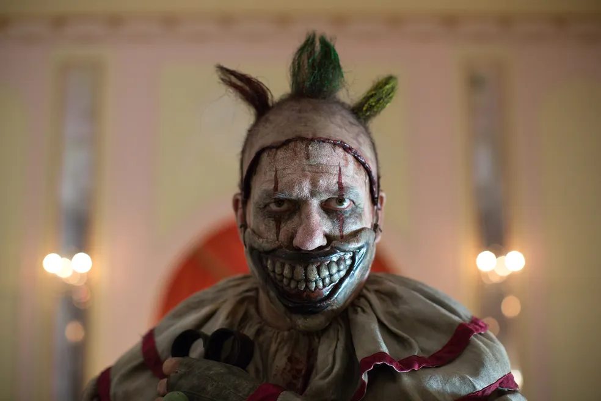

<!DOCTYPE html>
<html lang="en">
<head>
    <meta charset="UTF-8">
    <meta name="viewport" content="width=device-width, initial-scale=1.0">
    <title>Document</title>

    <link rel="stylesheet" type="text/css"  href="style.css"/>
</head>
<body>
    
</body>
</html>

       <div class="caixa">
          <h1></h1>
          <li><a href="index6.html">5 temporada</a></li>
          

          <p>American Horror Story: Freak Show, é a quarta temporada da série de televisão
             American Horror Story. centra-se em um dos poucos show de aberrações (ou circo dos horrores) 
             restantes no ano de 1952, e como seus donos são capazes de fazer para mantê-los em 
             funcionamento no conflito entre a trupe de aberrações e as "forças do mal", que não conseguem 
             entendê-los.</p>
          <p>Uma trupe circense acaba de chegar à cidade, liderada por Elsa Mars, uma mulher que esconde o 
            seu passado de todos. Os membros incluem Ethel Darling, a mulher barbada e seu filho Jimmy, 
            mãos-de-lagosta; o levantador de peso Dell Toledo e sua atual esposa Desiree; e Dot e Bette 
            Tattler,as irmãs siamesas acusadas do assassinato de sua mãe. Aos arredores da cidade, estão 
            Twisty,um palhaço responsável por uma série de mortes; Stanley e Maggie Esmerelda, uma dupla 
            de vigaristas interessados em vender corpos de aberrações; Dandy Mott, um jovem adulto mimado
             que representa uma ameaça maior do que parece ser; e sua mãe Gloria Mott; que fará de tudo 
             para esconder a real natureza assassina do filho.</p>     